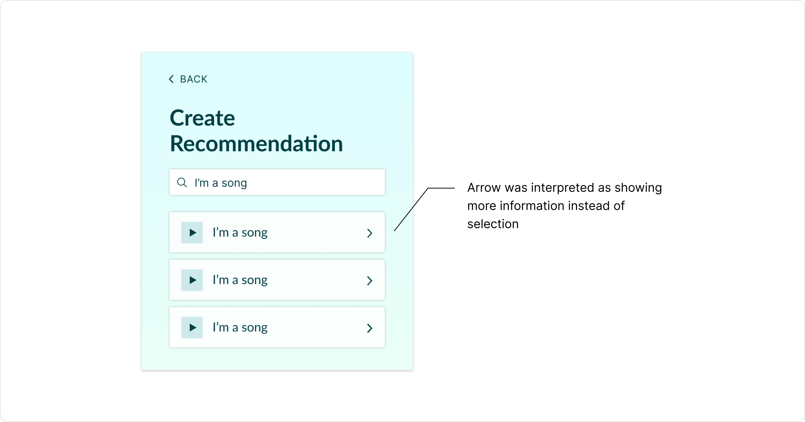

Although music streaming platforms are widely popular to maintain playlists and find new music, the focus within these applications is less on the process of sharing music and more on the individual. Thus, I wanted to design an app that would encourage the process of music sharing.
Defining the UsersUpon conceptualizing the broad problem, I proceeded to define groups of users that I would want to conduct research on in order to specify the problem:
In order to more clearly define my problem, I first had to complete user research in order to figure out the existing user needs in the music recommendation space. In total, I conducted a survey and three in-depth interviews.
SurveyI utilized the survey in order to figure out the general sentiment with regards to the music recommendation process. The survey received 46 total responses. Through these responses, I noticed the following patterns:
The interviews provided further insight into the overall trends that I received from the survey. Similar to the survey, I observed that while all interviewees were enthusiastic about receiving music recommendations from their friends, they were much more hesitant to give music recommendations. This seemed to be due to the fact that they were unsure if said friend had the same music taste as them. A synthesis of some of the key ideas from the interviews can be viewed below.
The findings of this research resulted in my definition of the following design problem:
I approached solving the problem through expediting the music sharing process in order to make it less intimidating and through establishing a clear visual language. The result was an app where the each user has a list of songs that their friends have recommended to them. These recommendations expire after a week in order to prevent the list from becoming too cluttered. This app would include two key features:
Given the scope of the project, I decided to focus on developing the recommendation feature.
First Iteration of WireframesFor my first pass at the wireframes, I attempted to highlight the interaction between the user and their friends. As a result, the user’s homepage consisted primarily of their friends list, where they could access their friends’ profiles. However, the drawback of this flow is that it was not very intuitive; if a user was opening the app for the first time, they likely not understand that the main purpose of the app was to recommend and view recommended songs.
In the second iteration, I fixed the issue of the user flow by instead prioritizing the key features that I had initially outlined in my overall goal. In other words, I wanted all of the reasons that would prompt the user to open the app to be immediately available. These reasons included exporting songs, creating recommendations for friends, and viewing songs that friends have recommended to the user. Within this second set of wireframes, the home screen clearly defines each of these actions (eg. the export button is clearly visible, the plus button is prominent for creating recommendations, and the list of recommended songs is immediately displayed).
In order to contextualize my second set of wireframes, I created a quick prototype of the app. This prototype would later be used for usability testing. With this prototype, I had two main goals:
My main goal in conducting usability testing was to test the flow of the app through the following questions: Is the app intuitive to use? Which parts feel don’t feel intuitive?
In order to test this, I provided the users with the prototyped app and asked them to perform tasks that would give me insight into where...
Overall, I found that all users found the general flow of the recommendation process to be straightforward. However, some icons I implemented were misleading. For example, the arrow I included on the song card was often interpreted to lead to more detailed information about the song when in reality I had intended it to indicate that the song would be selected for recommendation.
Other insights mainly revolved around missing features that users were looking for. This included additional statistics regarding how many songs the user has recommended to their friends as well as ways to edit or delete recommendations given to friends if the user made a mistake in the process of creating a recommendation process.
In the final iteration of my design, I incorporated the missing features mentioned in the usability testing, added the finishing touches to the UI, and translated the design to desktop. Drawing from feedback from the usability testing, I made the following refinements: